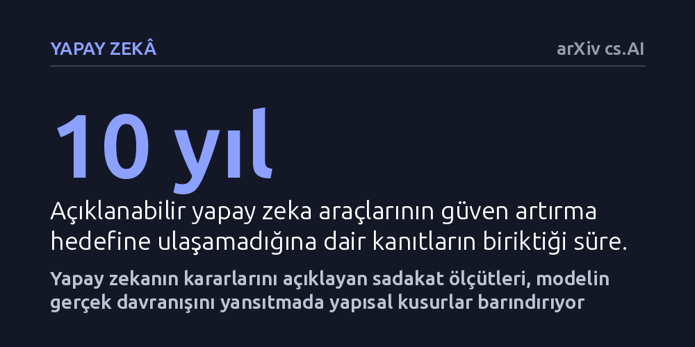

YAPAY-ZEKA · arXiv cs.AI · 2026-10-13
Çalışma, açıklanabilir yapay zeka yöntemlerinin modele sadakatini denetleyen ölçütlerin güvenilirliğini inceledi. Mevcut sadakat ölçütlerinin beş temel yapısal kusur barındırdığı ve model ile açıklama arasındaki uyumu hesaplamada yetersiz kaldığı saptandı.
Yapay zekanın kararlarını açıklayan araçlara körü körüne güvenilemeyeceğini, çünkü bu açıklamaların doğruluğunu denetleyen ölçütlerin dahi yapısal kusurlar taşıdığını gösterir.

Yapay zeka modelleri günlük hayatın ve iş dünyasının kritik noktalarında karar verici konuma geldikçe, bu kararların arkasındaki mantığı kavrama ihtiyacı da hızla arttı. Açıklanabilir yapay zeka araçları, karmaşık algoritmaları insan için anlaşılır kılarak sistemlere duyulan güveni artırma vaadiyle geliştirildi. Bir finansal modelin kredi talebini neden reddettiğini veya bir teşhis sisteminin hangi bulguya dayandığını basit gerekçelerle ortaya koymak temel hedefti.
Ancak son on yılda yapılan çalışmalar, bu hedefin genel olarak başarısızlığa uğradığını ortaya koyuyor. Üretilen basitleştirilmiş açıklamalar insanlarda sahte bir güven oluşturarak sistemin hatalı tahminlerine gereğinden fazla bel bağlanmasına yol açabiliyor. Bu hatalar fark edildiğinde ise kullanıcılar algoritmaya büsbütün sırt çeviriyor. Bu nedenle açıklamaların modelin gerçek iç işleyişine ne kadar sadık kaldığını, yani gerçeği ne ölçüde yansıttığını ölçebilmek hayati bir gereklilik haline geldi.
Araştırmacılar bu çalışmada tek bir veri kümesi üzerinde deneysel bir model eğitmek yerine, açıklanabilir yapay zeka alanında öznitelik önemini hesaplayan yöntemleri ve bunların sadakat ölçütlerini kavramsal olarak masaya yatırdı. Çalışma, son on yılın birikimini sistematik olarak değerlendiren bir durum değerlendirmesi (pozisyon makalesi) niteliği taşıyor.
İnceleme sürecinde, girdideki hangi parçanın kararda ne kadar pay sahibi olduğunu gösteren açıklamaların, yapay zekanın gerçek iç mekanizmasıyla ne kadar örtüştüğü teorik ve yöntemsel düzeyde incelendi. Mevcut ölçüm yaklaşımlarının matematiksel temelleri ve getirdikleri hesaplama yükü adım adım irdelendi.
Çalışmanın ortaya koyduğu en somut bulgu, mevcut sadakat ölçütlerinin güvenilir bir denetim sağlamasını engelleyen beş büyük yapısal yetersizlik barındırması oldu. Açıklama araçları çoğunlukla modelin karmaşık matematiksel yapısını aşırı derecede basitleştiriyor. Bu durum, sunulan açıklama ile modelin asıl davranışı arasında ciddi bir uyumsuzluk doğuruyor.
Üstelik bu sadakati kuramsal olarak tutarlı bir biçimde hesaplamak mevcut metriklerle ya imkânsız hale geliyor ya da devasa bir hesaplama maliyeti gerektiriyor. Dolayısıyla bir yapay zekanın kararlarını denetlemek için kullanılan mevcut yöntemler, sağlam bir zemin sunmaktan uzak kalıyor ve gerçeği tam yansıtmayan bir yaklaşıklıkla yetinmek zorunda kalıyor.
Elde edilen bulgular, açıklanabilir yapay zeka araçlarının bugün itibarıyla güven tesis eden bir denetim mekanizması olmaktan ziyade, geliştiricilerin modeldeki aksaklıkları tespit etmesine yarayan bir hata ayıklama aracı gibi çalıştığını gösteriyor. Açıklamalara güvenerek kesin kanaatlere varmak, gerçekte denetlenememiş bir sistemin yanıltıcı özetine inanma riski taşıyor.
Yazarlar bu yapısal tıkanıklığın aşılabilmesi için dört yeni araştırma doğrultusu öneriyor. Yapay zekaya toplum nezdinde gerçekten güven duyulabilmesi, yalnızca modelin kendisine değil, ona ayna tuttuğunu iddia eden sadakat ölçütlerinin de bu kusurlardan arındırılmasına bağlı görünüyor.